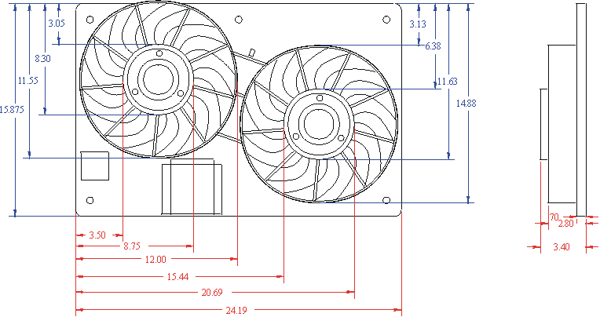

-
Personally I prefer the cheap and easy dual (04 era) chevy malibu fans. Both together you're only looking at ~25A. can be had new for less than $100 with harness connectors. trim about 1/4" off each side of the shroud, and it fits excellently! If you prefer, using a dual fan controller, can be wired to be operated independently. I have them on a couple cars, one with stock turbo rad, other with a champion aluminum, and have had no issues with either. quiet, simple, easy, and flow an excellent amount of air!Damn dirty angels....these cars!
Current Daily Driver - 86 Turbo.
Under the cover - THE BANANA… that needs to be re-energized.
sigpic -
I just snagged a "Ramcharger" fan off a dead 2000 Intrepid. They have the relays already mounted on the unit. Basically the same size as the maxima fans. Any idiot should be able to find one. The cool thing about this fan is it's "slow" speed is barely a quiet idle to move air. They are plenty powerful on high.

I also got this slim single off a 94 Volvo. These are also super easy to find. They also have a neat two-speed relay module attached that is easy to install.
Flow is crazy with this thing, probably the same or more than the Maxima ones it replaced, and I gained a ton of room.
sigpic -
Pretty sure that dual fan setup is the same thing I have. Trimmed those tabs off the sides and it dropped right onto the radiator. Running it with a Derale fan controller.Originally posted by ButterPrius… because Pretentious wouldn't fit across the back of the car…
Cheap, Fast, Reliable - pick any two
My 1986 Turbo Build -
I read somewhere that the Volvo fan is very similar and maybe the same as the Taurus fan .
I need something that will cover the whole radiator core and be slimmer than the thick Taurus fan. I already have the relays to run the fans. The Mercury Cougar fans look like the best fit for what I need.
The guy from dccontrol.com says that the Cougar fans are low impedence and require a diode or resistor or something to work correctly with the PWM fan controller the he sells. Might be needed for other PWM fan controllers.Shiro #443

-
Remember when you had a standalone ecm with fan controls?
…ohh wellll"produce first.talk second." -
Dying....sigpic -
All the Microtech has is a single wire to ground a relay at an adjustable temperature for fan control.So does Nistune with the Z32 ecu. I'm still running the Microtech ecu though. I'm still getting a few things ready for the ecu swap. Also slowing me down a little is the 90+ heat and 100% humidity here in Miami. LOLShiro #443
-
Here's some specs on the cougar/mystique/contour dual fans
Dimensions of the dual fan

Taurus single 2-speed fan dimensions
Mercury Cougar dual fan factory wiring diagram
dual fan wiring diagram showing a 2 speed fan controller
Looks like the both fans work on low speed with power going through the low speed resistor and both fans work on high speed bypassing the resistor.Shiro #443
-
I just went ahead and ordered a new fan (part#TYC 620750) from rockauto.com for $98 shipped. It comes with a lifetime warranty and includes the low speed resistor. I ordered 3 connectors from NAPA ECH EC267 for $6.99 each. One for each fan and one for the low speed resistor.
Shiro #443
-
Bro…we live in Miami…what the h#$% do you need low speed for??
-
How many CFM do those fans flow? -
I don't know how much CFM they put out but I'm gonna try to get them installed today. They look better than what I have now and will cover the whole radiator core. I'm gonna hook it up as a 2 speed since I already have the relays setup . Also it's better to start them on low then switch to high when needed to reduce the amp spike.Shiro #443
-
What's the benefit of these electric fan setups over the stock solution? I would think a large shrouded fan running off the engine would be better and more reliable.1988 300ZX Turbo Shiro Special -
The whole engine compartment has been modified so the stock setup won't fit.
Electric fans usually free up horsepower and eliminating the stock shrouds and fan clutch makes room for intercooler pipes and other stuff.Shiro #443
-
I'm glad I stumbled upon this thread. Looks like I'll be ordering this kit as well.Originally posted by Rick88ss
How do you like it so far Rick?Shiro #562
vg33et66- satan log manifold- satan racing plenum- 800cc o-ring injectors- Schneider
s2 cams- Schneider valve springs- jwt 450hp kit- stance gr+ coilovers- Starion Wheels
soon to be replaced by Epsilon Southern Ways 16x10 3piece wheels
sigpic

{kind=link}
Copyright © 2006–. All rights reserved. Privacy Policy
Comment